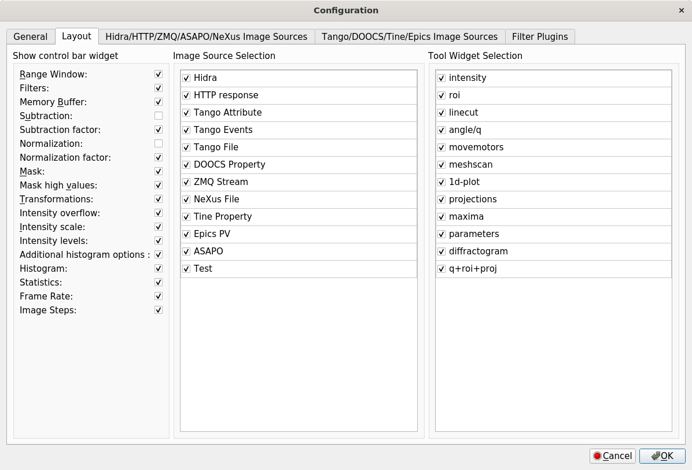

Layout Settings¶
The second tab of the configuration dialog contains Layout options. It allows for the user to hide unwanted group widgets.

Show widget
- Filters: shows the filter widget
- Memory buffer: shows the memory buffer widget
- Subtraction: shows the background subtraction sub-group
- Subtraction factor: multiplicative scaling factors for background
- Normalization: shows the bright field image sub-group
- Normalization factor: multiplicative scaling factors for bright field image
- Mask: shows mask the image widget
- Mask high values: shows mask high value widget
- Transforms: shows the transformation widget
- Intensity scale: shows the Intensity display scaling group
- Intensity levels: shows the display levels sub-group
- Additional histogram options: shows additional options: bin edges algorithm and data steps to tune auto finding histogram levels
- Histogram: shows the intensity histogram
- Statistics: shows the image statistics group
- Frame Rate: shows frame rate (in Hz)
- Image Steps: shows image step widgets for loaded files
Image Source Selection
allows select, deselect or rearrange order (by drag and drop) image source items in Image Source ComboBox
Tool Widget Selection
allows select, deselect or rearrange order (by drag and drop) tool items in Tool Widget ComboBox